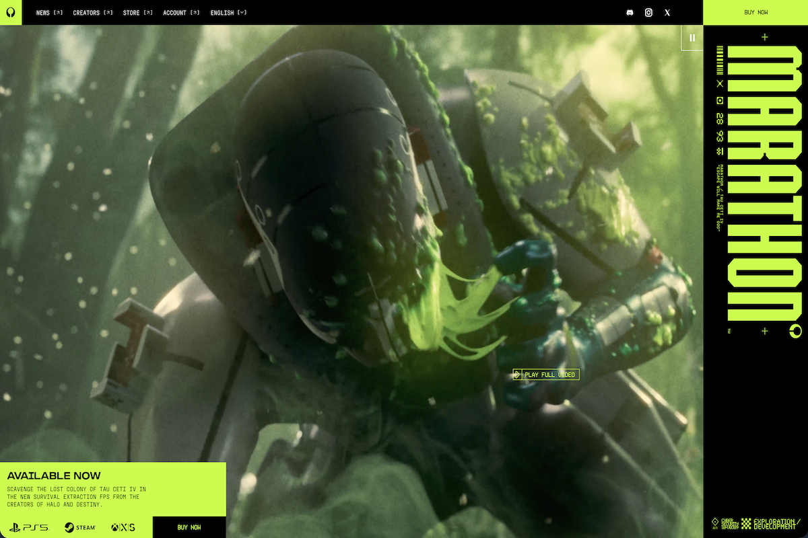
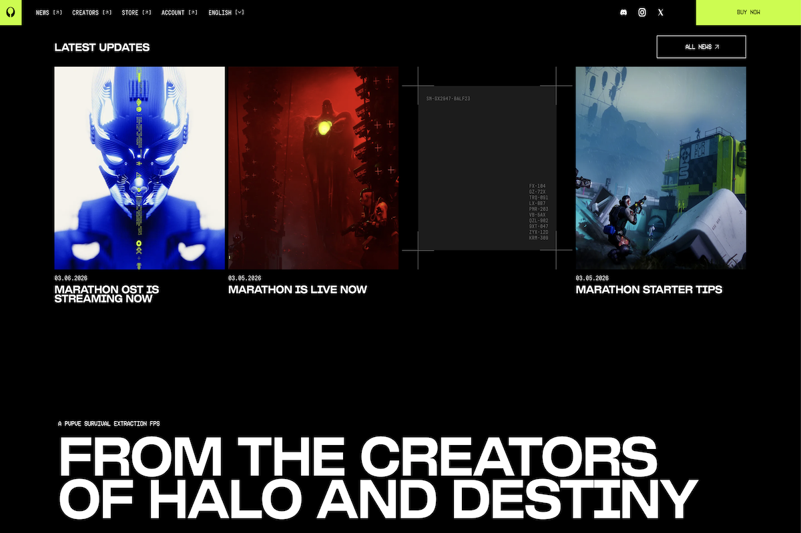
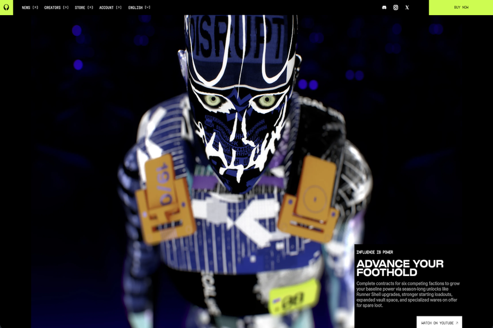
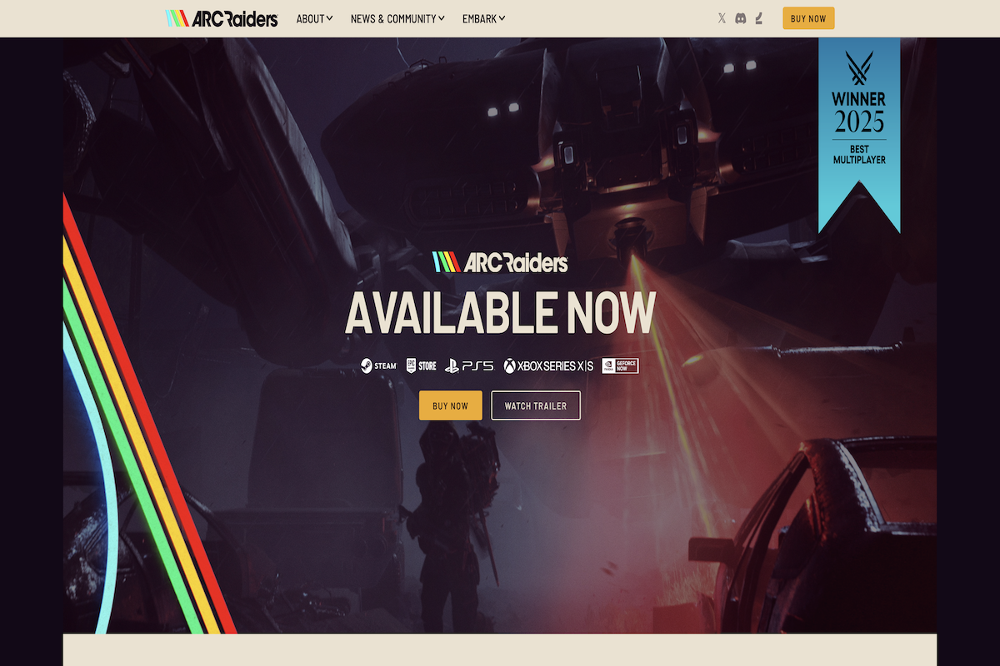
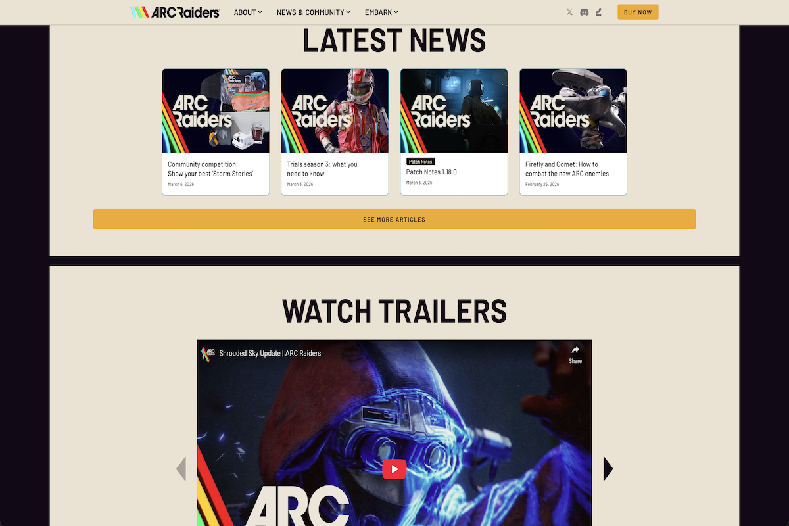
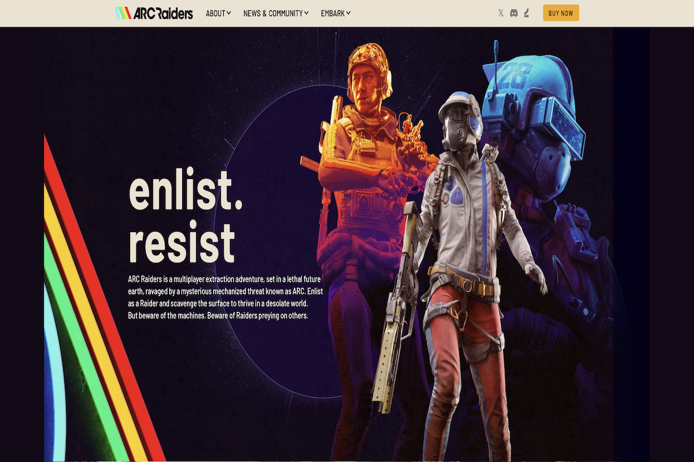

Marathon, a recently-released game from Bungie, aims to make the extraction shooter genre accessible to a wider audience, something that most other titles in this gaming niche have failed to do. To this end, Marathon has been created to stand apart from similar games, with a very unique and vivid art style, dense incorporation of motifs everywhere a player looks or interacts in-game, and a number of different typefaces comprising the user interface. While Marathon’s approach is different and, they hope, compelling - they have significant competition in this space with competing extraction shooter ARC Raiders, from Embark Studios.
The website for each respective game gives an audience a strong idea of what their particular game experience entails. In the case of Marathon, the website’s aesthetics are essentially an extension of the art style of the game itself. Bungie calls Marathon’s art style “graphic realism” although the term “brutalism” is typically used by observers outside of the company. This graphic realism is characterized by its bold uses of color, unconventional usage of numerous typefaces everywhere the player looks, and overall a stylized aesthetic comprised of vibrant neon colors in contrast against black. All of these aspects of graphic realism are clearly on display on Marathon's website:



In stark contrast to Marathon, the ARC Raiders website is surprisingly neutral, with relatively few uses of flashy color (aside from the rainbow in the ARC Raiders logo) or varied extremes of typography. Through the ARC Raiders website, Embark Studios presents a more direct, down-to-earth window into the game and what the experience may hold for prospective players. Its muted hues evoke a traditional gameplay experience. While that can seem like ARC Raiders played it safe with the game’s official website, it currently stands as one of the most successful extraction shooters of all time.



Marathon and ARC Raiders have taken opposite approaches towards reaching the same gaming audience, as evidenced by their respective websites. As Marathon only recently launched, it remains to be seen if their blend of unique game design and vivid aesthetics will be a breath of fresh air to new players. In the meantime, the bland-in-comparison website for ARC Raiders still seems to do for them what they need it to, as they’re currently regarded as the top extraction shooter out there.